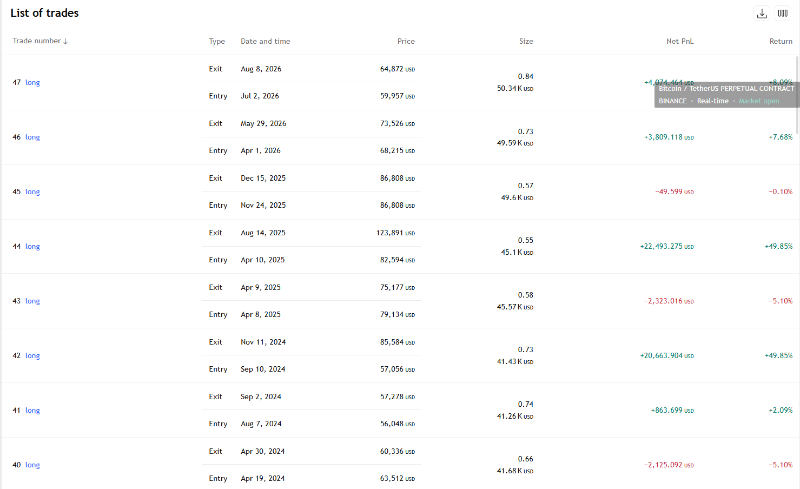
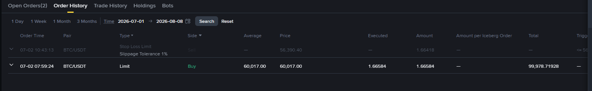
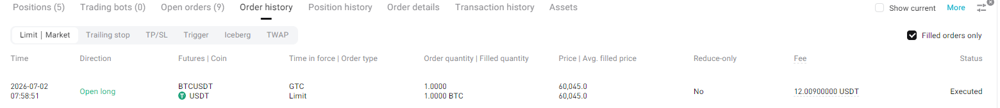
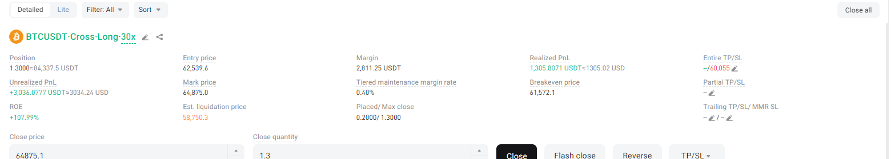

信号本身不通过 VPS 自动下单，由本人根据信号手动在交易所下单执行。以下为逐笔成交截图， 以及策略自 2024 年以来的信号进出场记录，供核对。

2026-07-02 买入 1.66584 BTC @ $60,017.00，总额 $99,978.72

2026-07-02 07:58:51 开多 1.0 BTC @ $60,045.0，手续费 12.009 USDT，已成交

持仓已加至 1.3 BTC（分批加仓），入场均价 $62,539.6，浮盈 +$3,036.08（+107.99%）
